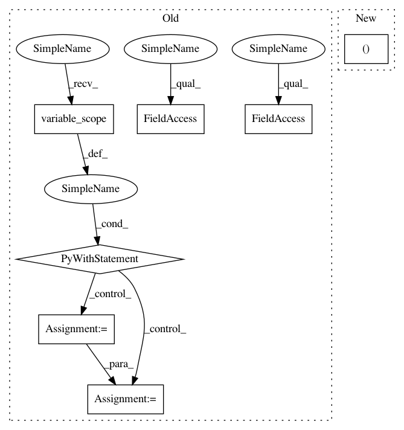

d79992cfd669974296a34d861060c921a8b12d9f,tensorlayer/layers/convolution/expert_conv.py,Conv2dLayer,__init__,#Conv2dLayer#Any#Any#Any#Any#Any#Any#Any#Any#Any#Any#Any#Any#,176
Before Change
)
)
with tf.variable_scope(name):
W = tf.get_variable(
name="W_conv2d", shape=shape, initializer=W_init, dtype=LayersConfig.tf_dtype, **self.W_init_args
)
self.outputs = tf.nn.conv2d(
self.inputs, W, strides=strides, padding=padding, use_cudnn_on_gpu=use_cudnn_on_gpu,
data_format=data_format
)
if b_init:
b = tf.get_variable(
name="b_conv2d", shape=(shape[-1]), initializer=b_init, dtype=LayersConfig.tf_dtype,
**self.b_init_args
)
self.outputs = tf.nn.bias_add(self.outputs, b, name="bias_add")
self.outputs = self._apply_activation(self.outputs)
self._add_layers(self.outputs)
if b_init:
self._add_params([W, b])
After Change
// super(Conv2dLayer, self
// ).__init__(prev_layer=prev_layer, act=act, W_init_args=W_init_args, b_init_args=b_init_args, name=name)
super().__init__(name)
self.act = act,
self.shape = shape
self.stride = stride
self.dilation_rate = dilation_rate
In pattern: SUPERPATTERN
Frequency: 3
Non-data size: 7
Instances
Project Name: tensorlayer/tensorlayer
Commit Name: d79992cfd669974296a34d861060c921a8b12d9f
Time: 2018-12-05
Author: dhsig552@163.com
File Name: tensorlayer/layers/convolution/expert_conv.py
Class Name: Conv2dLayer
Method Name: __init__
Project Name: tensorflow/kfac
Commit Name: a0ce9c776719da042d58022a31db5e99755588ad
Time: 2019-02-01
Author: jamesmartens@google.com
File Name: kfac/python/ops/kfac_utils/periodic_inv_cov_update_kfac_opt.py
Class Name: PeriodicInvCovUpdateKfacOpt
Method Name: kfac_update_ops
Project Name: tensorlayer/tensorlayer
Commit Name: d79992cfd669974296a34d861060c921a8b12d9f
Time: 2018-12-05
Author: dhsig552@163.com
File Name: tensorlayer/layers/convolution/expert_conv.py
Class Name: Conv2dLayer
Method Name: __init__
Project Name: ray-project/ray
Commit Name: 83e06cd30a45245c2cb0e9f4bd924224b1581554
Time: 2020-03-01
Author: sven@anyscale.io
File Name: rllib/agents/ddpg/ddpg_policy.py
Class Name: DDPGTFPolicy
Method Name: __init__